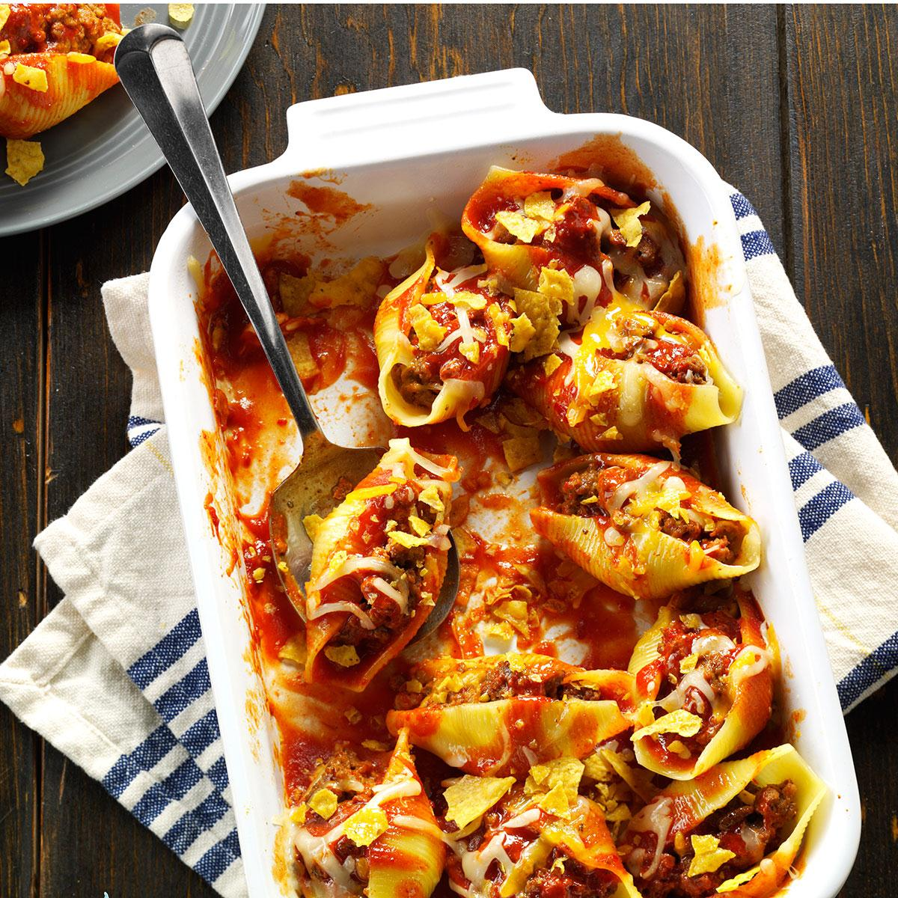

Baked Feta Pasta

Description
This is a good dish to make if you aren't sure what
to make, but you have some ingredients lying around
the house. Even if you are not a feta lover
(I know I'm not), you'll still enjoy this dish.
Ingredients
- 2 pints cherry tomatoes
- 1 shallot, quartered
- 3 cloves garlic
- 1/2 cup virgin olive oil
- 1 pinch kosher salt
- Pepper, to taste
- 1 block of feta cheese
- 3 sprigs of thyme
- 10oz pasta of your choice
- (Optional) 1 pinch of basil
Steps
- Pre-heat oven to 400 degrees Fahrenheit
- Combine tomatoes, shallot, garlic, and most
of the olive oil in a baking dish
- Season with salt and pepper, toss to combine
- Place feta in center of dish, drizzle rest of
oil on top
- Add 3 sprigs of thyme on top
- Bake for 45 minutes
- Cook pasta according to box
- Once dish and pasta are both done, combine in dish
- Stir until sauce is creamy
- (Optional) Garnish with basil